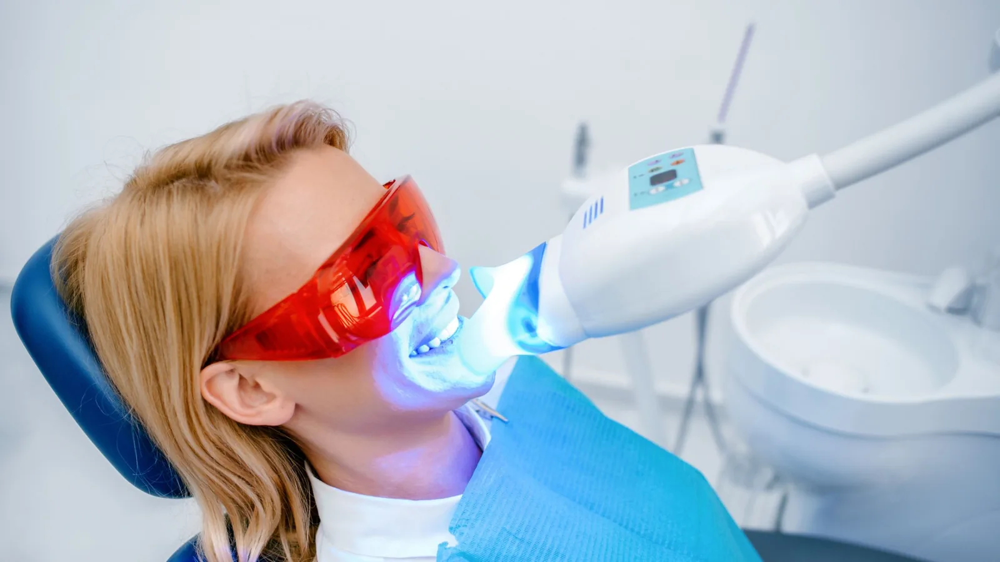

Our services
Technology that earns its place.
Equipment is only worth having if it makes treatment better, faster or more comfortable for the person in the chair. Everything here is used because it does one of those three things — not because it looks impressive on a website.

Digital intra-oral scanning
A small handheld scanner builds a 3D model of your teeth in a few minutes. For most patients that replaces the tray of impression putty, which is a relief if you have a strong gag reflex. The scan is sent electronically to the laboratory, which removes a source of distortion in the fit of crowns, bridges and dentures.
It also makes a useful record. Comparing a scan taken today with one from two years ago shows tooth wear and gum recession clearly.
3D CBCT imaging
Cone beam computed tomography produces a three-dimensional view of the jaw. It is used for planning implants — assessing bone volume and locating nerves and sinuses — and for assessing complicated roots before root canal treatment or surgical extraction.
CBCT involves a higher radiation dose than a standard dental X-ray, so it is taken only where there is a clear clinical reason. Dr Meg will explain why a scan is being recommended before it is taken.
Diode laser
A diode laser is used for selected soft-tissue procedures, including reshaping gum tissue (gingivectomy) and as an adjunct in the treatment of gum disease. It is also used in some cases to help manage jaw joint discomfort, though the evidence for that application is still developing and Dr Meg will be frank with you about what it can and cannot be expected to do.
Laser treatment is not a substitute for conventional gum therapy. It is used alongside it, where it is appropriate.
What sits under laser & digital dentistry
Diode Laser Dentistry
— gingivectomy, adjunctive gum disease treatment, selected soft-tissue procedures
Digital Scanning & 3D CBCT Imaging
— intra-oral scanning and cone beam imaging
Common questions
Soft-tissue laser procedures are usually carried out under local anaesthetic and most people find recovery straightforward. Experiences differ, and Dr Meg will explain what to expect for your specific procedure.
Because some questions cannot be answered in two dimensions — how much bone is available for an implant, exactly where a nerve runs, how many roots a molar has. Where a standard X-ray will do, that is what we take.
For most restorative work a well-taken digital scan gives an excellent result and removes the discomfort of putty. In a small number of situations a conventional impression is still the better option, and we will use one where that is the case.
No. A diode laser works on soft tissue only. It does not cut enamel or remove decay.
No. Scanning is used where something is being made for you. CBCT is used where a specific question cannot be answered with a standard X-ray. Laser is used for particular soft-tissue procedures. None of it is routine.
Mention it when you book. Digital scanning avoids the impression tray entirely, which is usually the part people struggle with most.